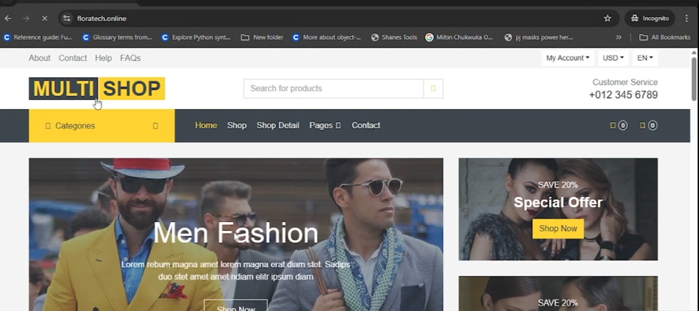
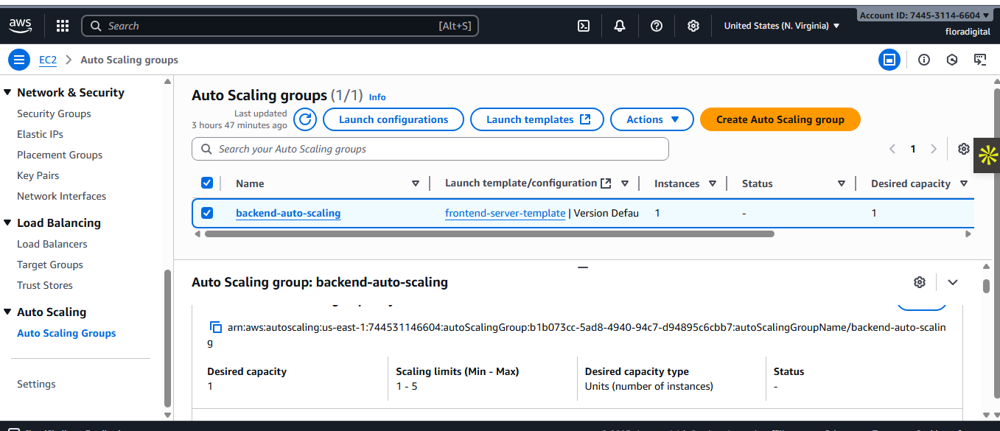
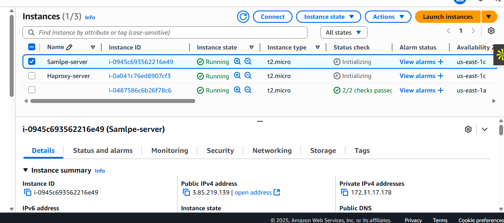
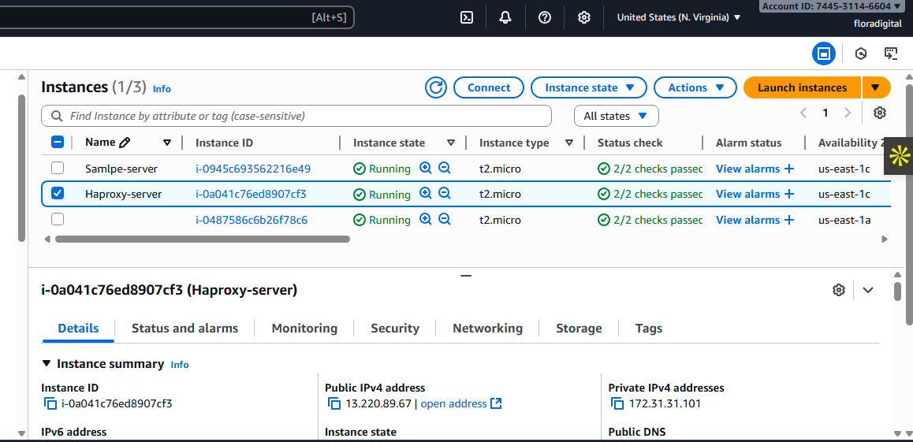
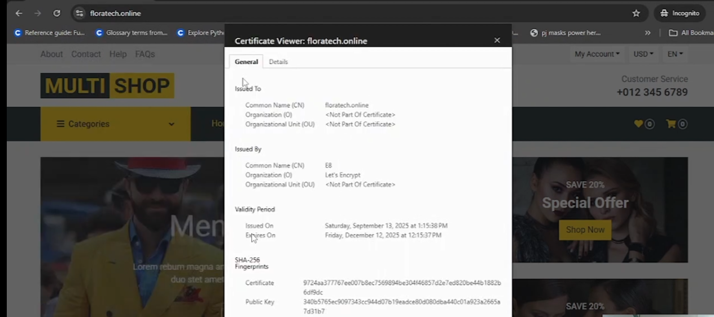

Cloud Infrastructure & DevOps
Scalable Web Hosting with AWS and HAProxy
A cloud infrastructure project focused on web hosting with Amazon EC2, launch templates, Auto Scaling Groups, load balancing, HAProxy, DNS configuration, and TLS/SSL.

Web hosting project — website preview.
Compute
Amazon EC2
Virtual servers for hosting web workloads.
Scalability
Auto Scaling
Reusable server configuration and managed instance capacity.
Traffic management
Load balancing and proxying
Routing web requests through the configured infrastructure.
Project overview
This project explored hosting a website on AWS using EC2 instances and supporting infrastructure. The server configuration was used as the basis for a reusable Amazon Machine Image (AMI).
An EC2 launch template and Auto Scaling Group provide a repeatable way to launch and manage instances. When associated with a suitable load balancer and target group, the environment can distribute incoming requests among healthy registered targets.
The project also covered HAProxy, DNS, HTTPS certificates, and infrastructure notifications. The precise roles of these components depend on how they were configured in the deployed environment.
Architecture
The diagram below illustrates the main infrastructure concepts involved in a scalable web hosting environment.
Entry point
User / Web Browser
Website requests
Name resolution
DNS
Resolves the website hostname
Traffic distribution
Elastic Load Balancer
Routes requests to registered targets
Compute tier
EC2 Auto Scaling Group
Instances launched from a launch template
Web server / proxy
HAProxy / Nginx
Include the components used in the actual deployment
Amazon SNS
Infrastructure notifications, where configured
TLS/SSL
HTTPS at the configured termination point
Implementation
Provision EC2 and prepare the web server
Launch an EC2 instance, install and configure the required web server, and verify that the website responds as expected. Configure security group rules for the required traffic.
Create an AMI and launch template
Prepare a reusable AMI and configure a launch template with the required image, instance settings, security groups, and launch parameters.
Configure the Auto Scaling Group
Use the launch template to define the instances managed by the Auto Scaling Group. Configure capacity limits and associate the appropriate load-balancer target group where applicable.
Configure load balancing and HAProxy
Configure the load balancer, target health checks, and HAProxy or Nginx according to the intended request-routing design. Verify that requests reach the expected web server.
Configure DNS and HTTPS
Configure DNS to direct the website hostname to the intended endpoint. Configure the appropriate TLS certificate and verify the hostname, certificate validity, and HTTPS response.
Configure notifications
Where configured, use Amazon SNS to deliver relevant infrastructure notifications to subscribed endpoints. Confirm actual message delivery through testing.
Screenshots and evidence
Screenshots from the AWS hosting project, covering the live website, EC2 instances, Auto Scaling, network configuration, HAProxy, and HTTPS.
Live website
Browser view of the hosted website.

AWS Auto Scaling
Auto Scaling Group configuration and status.

EC2 instances
Instances associated with the hosting environment.

AWS network configuration
VPC subnet configuration for the cloud environment.

HAProxy configuration
Reverse proxy configuration used in the hosting setup.

HTTPS and TLS certificate
Certificate evidence for secure website access.
Testing and validation
Validation for this type of environment includes checking that instances launch correctly, the website responds, load-balancer targets become healthy, and HTTPS works through the intended endpoint.
- Check that the website responds from the intended endpoint.
- Verify EC2 instance status and load-balancer target health.
- If tested, verify that the Auto Scaling Group replaces a deliberately terminated test instance.
- Confirm DNS resolution and HTTPS certificate validity.
- If SNS was configured, test notification delivery.
Document only the tests you actually performed and the results you observed.
Security considerations
- Restrict security group rules to the ports and sources required.
- Use valid TLS certificates for public HTTPS endpoints.
- Protect credentials, access keys, passwords, and private keys.
- Apply appropriate IAM permissions to AWS resources.
- Review screenshots before publication to remove sensitive information.
Key learnings
Infrastructure
- EC2 instances and reusable AMIs
- Launch templates and Auto Scaling Groups
- Load balancing and target health
- VPC subnet concepts
Web hosting and security
- HAProxy and reverse proxy concepts
- DNS configuration
- TLS/SSL certificate management
- Infrastructure notification concepts